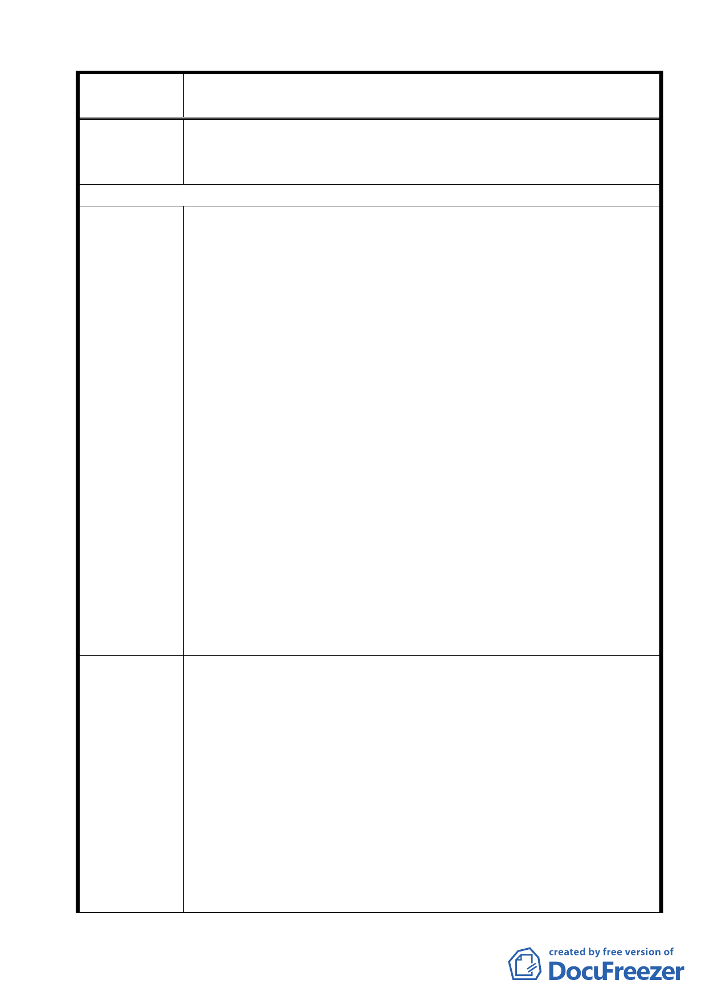

案名
變更臺北市士林區陽明山山仔后地區第二種住宅區為特定住宅區
細部計畫案
合理原則辦理，以符法制。
2.本案訂定之「都市設計管制要點」逾越文化資產審議委員會作
成之決議，致本行需保留更多建物，請依該決議辦理。
97/2/20 陳情意見
1.台銀關心山仔后地區環境容受力、文化資產等課題，尊重規劃單
位解決問題的努力。
2.規劃單位有關查明台銀土地權屬、取得緣由之回應內容稱，本行
土地係於法人格取得前奉行政院令以資產進行價購，並非著眼
於資產投資乙節，與事實有所不符。本行土地不論係在具備法
人格前或後取得，抑或登記為「省有」或「行有」，均係本行支
付價金所價購。本案本行土地雖係於取得法人格之前取得，仍
係由本行自行依法價購，並非經由徵收或以無償方式取得，由
於當時法制尚未完備而依行政院令暫時登記為「臺灣省」所有，
陳情理由
即實質上為台銀支付資金所「投資」的資產。
3.台銀土地權屬、取得緣由既經規劃單位確定 私有財產及係向國
有財產局依法價購取得，惟本行所提私有財產公平性問題仍未
蒙重視，爰再次請求尊重本行私有財產立場，應與其他私有土
地獲有同等待遇，俾符法制。
4.本案本行前配合政府政策支付資金所投資之原美軍眷舍，（目前
市價約 300 億元），依規劃草案容積率由 120％調降為 60％，對
資產價值有重大減損，造成淨值大幅降低，影響存款人權益及
銀行本業經營。國營銀行除負擔政策性任務外，尚須與國內外
同業競爭，請各位委員尊重本行係資產獨立之事業單位及私有
財產屬性，給予公平合理對待，維持合理經營環境，充分發揮
本業功能。
台銀對「降低山仔后地區環境容受力」之建議
1.重申建議參考「擬定臺北市士林區『天母白屋』保存區」細部計
畫案例」，於訂定山仔后地區「都市設計管制要點」時限制其使
用強度，惟仍應在不影響土地所有權人權益前提下，維持原有
容積率，至原依法可建築之基準容積受限制部分，得移轉至其
建議辦法
他地區建築使用。本計畫案將本行以外之私有土地第二種住宅
區均變更為特定住宅區（二），即所有權人不但維持原有容積
率，並增加建蔽率 5％；相反的，本行大部分土地（約 13.86 公
頃）卻比照公有土地第二種住宅區變更為特定住宅區（一），容
積率由 120％大幅降低為 60％，影響本行權益甚鉅，同為私有
土地而有差別待遇，有違行政程序法第六條規定，行政行為不
得為差別待遇之精神。
18